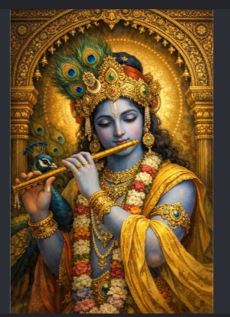
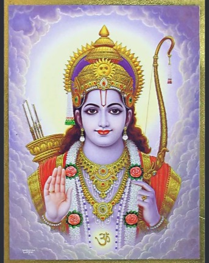
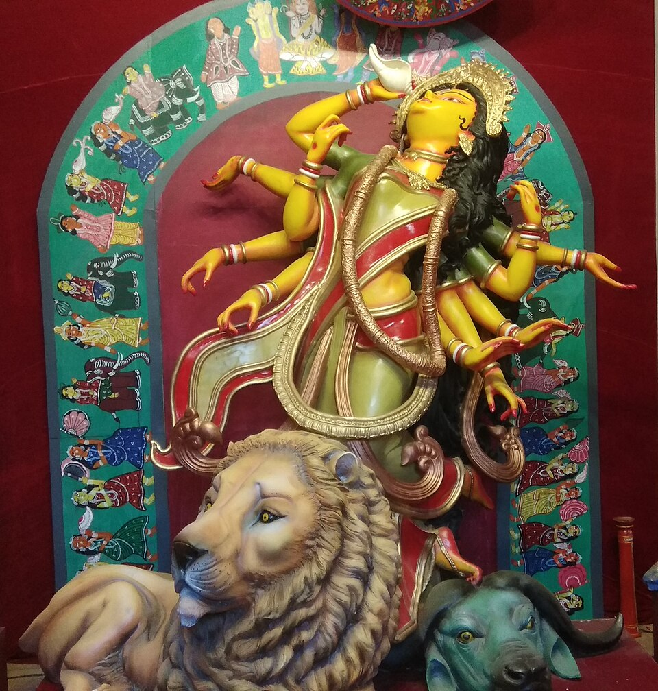

All 700 verses in Sanskrit with meaning in English and Hindi, a chanting mala, and a library of timeless mantras. No accounts, no ads, works offline.
Your right is only to work, but not to its results; do not let the results of action be your motive, nor let your attachment be to inaction.
Nitya keeps devotion simple: one verse to sit with, one mantra to repeat, one quiet habit that compounds.
All 18 chapters and 700 verses, with Sanskrit, transliteration and meaning in English and Hindi.
A 108-bead digital mala for chanting. Choose a mantra, tap for each repetition, and keep your streak.
Twelve foundational mantras with Devanagari text, transliteration, meaning and their scriptural source.
Questions about life, duty, fear or the mind, answered through the Bhagavad Gita, with the verse they come from.
Sacred art and temple photography, every image credited with its source and license. No generated images.



No sign-ups, no feeds, no streak-shaming. Your mala count and reading live on your device, and the whole app works offline once opened.